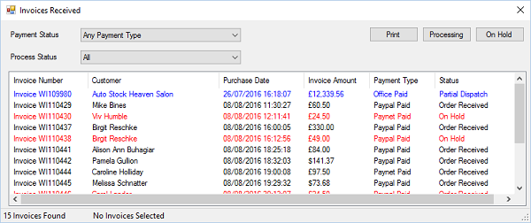

When an order is received via a website or created using Create Order then it can be viewed
by looking at Orders Received. To load orders received Select the “Orders” menu then select
“View Orders Received” menu. This will display the following:

You can limit the invoices to specific payment types by selecting the drop down list for
Payment Status.
Invoices can be printed or have their status changed to “Order Processing” or “On Hold”, to
complete this select the invoices you wish to process and click “Processing” or “On Hold”,
the order will be removed from this form when it’s stats is changed to “Processing”.
You can select multiple invoices by holding the Ctrl key and clicking each order with the
mouse.
Items that appear red have zero stock availability.
You can limit the invoices to specific Process Status by selecting the drop down list for
Process Status.